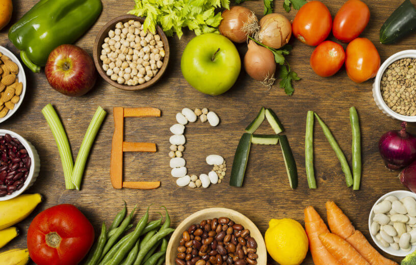

Il s'agit d'un mode de vie qui englobe de ne pas consommer quoique ce soit qui provienne d'un animal. Un vegan est donc une personne au régime alimentaire végétalien mais qui en plus n'utilise aucun produit d'origine animale dans tous les aspects de sa vie courante
| Recette | Image |
|---|---|
| Recettes Vegan |